ۋاكىئوم تەجىربىسىنىڭ ئالدى - كەينىدە ئەنۋەر مۇھەممەت
زەررىچە ۋە جىسىملار سىزىقلىق ھەركەت جەريانىدا ئۇز ئوقىدا ئايلىنىش يۆنىلىشى تەرەپكە ئاغىدۇ.
ئېغىشنىڭ قىممىتى ئوقىدا ئايلىنىش تىزلىكى بىلەن ئوڭ تاناسىپ بولىدۇ.
________ قاسىم سىدىق
بۇ تېمىدا قاسىم سىدىق ئەپەندىم تەشەببۇس قىلغان «شەكىل نەزەريىسىنىڭ 29-تىئورمىسى»دەپ ئاتىلىدىغان بىر لوگىكىلىق ھۆكۈمنىڭ توغرا -خاتالىغىنى ئىسپاتلاش تەجىربىسىگە ئالاقىدار ئىشلار ھەققىدە نۇقتۇلۇق توختالماقچىمەن.29-تىئورمىنىڭ ئومۇمى بايانى يۇقۇردىكى ئېپىگىراپنىڭ ئۇزى شۇ.
مەن ئاساسەن ئۇزەم بېۋاستە باشتىن كەچۈرگەن ۋە كۇرگەن ئىشلارنى ئەركىن بايان قىلىمەن ۋە تېمىنى تەدرىجى تەھرىرلەپ تولۇقلايمەن.
مەن قاسىم سىدىق ئەپەندىمنى تونۇمايتىم، پەقەت تور بەتلىرىدە ئىلان قىلىۋاتقان فىزىكا ساھەسىگە ئائىت ئەسەرلىرىنى دائىم ئۇچرتىپ تۇراتتىم، ئۆزەمنىڭ بۇ جەھەتتە بىلىمىم يىتەرلك بولمىسىمۇ، ئەمما كائىنات بىلىملىرىگە قىزىقىدىغىنىم سەۋەپلىك دائىم ئىنكاسلار ئارقىلىق ئۆز-ئارا پىكىر ئالماشتۇرۇپ تۇرىشاتتۇق.
2013- يىلى 2- ئاينىڭ 16- كۈنى قاسىمكام سىز«كائىنات»قا باشقۇرغۇچى بولۇشنى خالامسىز؟ ‹‹ مەن كەمبىغەل ھەق بىرەلمەيمەن ›› دەپ ئۇچۇر قالدۇرۇپتۇ. مەن سەۋىيەمنىڭ چەكلىكلىگىنى باھانە قىلىپ چىرايلىق رەت قىلدىم، ئەمما شۇندىن ئېتىبارەن مۇنبەر ۋە QQ دا پىكىر ئالماشتۇرۇپ تۇرۇشتۇق.
6- ئاينىڭ 18- كۈنى قاسىمكام تەجىربە ئىشىنى چوقۇم ئېلىپ بېرىش قەتئى ئىرادىسىگە كىلىپ، مىسرانىم مۇنبىرىگە مۇراجەتنامە چىقاردى ھەم مىنىمۇ بۇ تەجىربە ئىشلىرىغا ياردەملىشىپ بىرىشكە تەكلىپ قىلغان ئىدى. قانداق قىلاي ماقۇل دىسەم ئۆزەمنىڭ بۇ جەھەتتە يىتەرلىك بىلىمىم يوق. ياق دىسەم مۇشۇ ساھەدە 30 يىلدىن ئارتۇق شۇغۇللانغان، بارلىقىنى ئىلىم ئىشلىرىغا بېغىشلىغان بىر بوۋاينىڭ نا ئۈمۈتتە قېلىشىنى خالىمىدىم. بولدىلا، نىمە بولسۇن بىر بېرىپ كۆرۈشۈپ ئىككى ئېغىز مەدەت سۆزلىرىنى قىلىپ بولسىمۇ قايتىپ كېلەي دەپ ئۈرۈمچىگە يولغا چىقتىم.
ئۈرۈمچىگە يىتىپ كەلگەندىن كىيىن، بىز ئۇيغۇر تىبابەت دوختۇرخانىسى ئالدىدىكى ئاپتوۋز بىكىتىدە ئۇچراشماقچى بولۇشتۇق.
مەن ئاپتوۋۇزدىن چۈشۈپ قارىسام قاسىمكام خۇددى سوقۇشقىلى تۇرغان خورازدەك ئوزىنى گەۋدىلىك كۆرسىتىشكە تىرىشىۋاتقاندەك، ئەمما چىرايىدا كۇلكە يېغىپ تۇرغان ھالەتتە تۇرۇپ كىتىپتۇ. مەن بىر كۆرۇپلا تونىۋالغان ئىدىم، ئالدىغا بېرىپ سالاملاشقاندىن كىيىن مەن ئۆزەمنى تونۇشتۇردۇم ۋە بىز بىرلىكتە قاسىمكامنىڭ تۇرالغۇسىغا قاراپ ماڭدۇق.
ئۆيگە كىرگەندىن كىيىن ئۆيدە بىرقانچە مېھمانلار باركەن، ئۇلار بىلەن سالام سائەتلەردىن كىيىن تونۇشلۇق بىرىشتۇق.
تونۇشۇشلاردىن كىيىن مەن تەجىربە ئىشلەشكە مۇۋاپىق كىلىدىغان كىشىنىڭ بۇ سورۇندا يوقلىغىنى ھېس قىلدىم. بىرنەچچە كۈن قاسىم سىدىق ئاكىمىز بىلەن بىرگە بولۇش جەريانىدا، بۇ كىشىنىڭ تولىمۇ ئاق كۆڭۇل، چىقىشقاق، خۇش پېل، كەمتەر كىشى ئىكەنلىگىنى، تور مۇنبەرلىرىدە بەزىلەر ئېيتقاندەك ئۇنداق ناچار خۇي مىجەزلىك ئەمەسلىگىنى، گەپ سۆزلىرىنىڭمۇ تولىمۇ جايىدا، مەنتىقىغە ئۇيغۇن كىشى ئىكەنىلىكىنى ھېس قىلدىم. شۇنداق قىلىپ بىرقانچە كۈن ئۆتۇپ كەتتى. مەن تەجىربە ئىشلەيدىغان مەندىن باشقا كىشىنىڭ ھازىر بولمىغىنىنى كۆرۇپ، ئوزەمنىڭ ئەينى ۋاقىتلاردا
مەكتەپ باللىرى،
قۇچقاچ كاللىرى،
ئەمدى كەلدىڭمۇ؟
تىزەك تەرگىلى.
دەيدىغان، بىر ئاي ئىچىدە 15 كۈن ئەمگەك قىلىدىغان، ‹‹سېسىق زىيالى›› دەپ زىيالىلار مەسخىرىگە قالىدىغان ۋاقىتلاردا، مەكتەپنى ياخشىراق ئوقىيالمىغىنىمدىن ئېچىنىپ، بۇ يەردە ئۆزەمنىڭ تەجىربە ئۈسكىنىسى ياساشقا تولىمۇ ئىقتىدارسىز كىلىپ قالغىنىمدىن ئەپسۇسلىنىپ، ئوڭايسىز ئەھۋالدا تۇرۋاتقان ۋاقتىمدا بىر ياش قاسىمكامنىڭ ئۆيىگە كىرىپ كەلدى. قاسىمكام بۇ ياشنىڭ ئىسمىنىڭ جۈرئەت ئىكەنلىگىنى ھازىر سانائەت قۇرلۇش ئىنىستوتىتىنىڭ ئوقۇغۇچىسى ئوقۇغۇچىسى ئىكەنلىكىنى، بۇ قېتىمقى تەجىربە ئىشلىرىغا ياردەملىشىدىغىنىنى، بۇ جەھەتتە بۇ ياشنىڭ تامامەن ھوددىسىدىن چىقالايدىغانلىقىنى سوزلەپ تۇنۇشتۇرۇپ ئوتتى.
مەن بۇ تونۇشتۇرۇشتىن تولىمۇ خوشال بولدۇم. بىز ساام-سائاتلەردىن كىيىن سوھبىتىمىز ئۇنىڭ تەجىربە ئۇسكىنىسى ياساش لايھەلىرى توغرىسىدا بولۇندى. ئۇنىڭ تەجىربە ئۇسكۈنىسى لايھەسى نەزىريە جەھەتتىن تولىمۇ ئورۇنلۇق بولۇپ، ئۇ بۇ جەھەتتە خېلى ئۇزۇن مەزگىل تەتقىق قىلغان ئىكەن.
ئىلگىرى بۇ ياش ساۋاقداشلىرى بىلەن، شىنجاڭ ئۇنۋېرسىتىدا بىر قېتىم تەجىربە سىنىقى قىلىپ باققان بولۇپ، تەجىربە نەتىجىسىدە 30 مىتىر ئىگىزلىكتىن يېرىم مىتىردىن ئارتۇق ئېغىپ چۈشكەن بولسىمۇ، لىكىن كەسىپ ئىگىلىرى تەرىپىدىن ئېتراپ قىلىنمىغان ئىكەن. سەۋەبى بۇ قۇرۇلما ئىچى كاۋاك پولات شارنىڭ ئاستى تەرىپىگە تەڭپۇڭلۇقى ساقلىغان ھالەتتە ئورنىتىلغان ماتورنىڭ پىقىرىشى بىلەن توۋەنگە تاشلىنىدىغان بولۇپ، ماتور ئايلىنىپ مەلۇم سۈرئەتكە يەتكەندە، ئېسىپ قويۇلغان يىپنى كويدۇرۇش ئارقىلىق تاشلانغان. نەتىجىدە بۇ قۇرۇلما يېرىم مىتىر ئېغىپ كەتكەن ھالدا يەرگە چۈشكەن. دىمەك بۇ تەجىربە ئەسلى مۇۋاپىقىيەتلىك بولسىمۇ لىكىن ئۇلار، ‹‹ياڭاق پوستىنىڭ ئىچىگە قۇرۇت سېلىپ قۇيغاندەك ئىش قىلساڭلار بۇنى قانداقمۇ ئومۇم ئېتراپ قىلىدىغان تەجىربە قاتارىغا كىرگۈزۈشكە بولىدۇ، بۇنى پەقەت بالىلار تەجىربىسىلا قىلىشقا بولىدۇ›› دەپ پىسەنتىگە ئالمىغان. بۇ تولىمۇ ئەپسۇسلىنارلىق ئىش بولغان.
1-رەسىم

شۇنداق قىلىپ بىز ئەتىسىدىن باشلاپ جۈرئەتنىڭ لايھەسى بويىچە، بىر تەرەپتىن ئىزدەنگەچ، بىر تەرەپتىن ئىشلەشكە كىرىشىپ كەتتۇق.
جۈرئەتنىڭ لايھەسى بويىچە پىقىرىتىپ تاشلىنىدىغان شارچە، ئالدى بىلەن تەكشى ئەينەك ئۇستىگە ئەركىن قۇيۇلۇپ دومىلاپ توختىغاندىكى ئېغىرلىق مەركىزى تېپىۋېلىنغاندىن كىيىن، شۇ ئېغىرلىق مەركىزىنى نوقتا قىلىپ، ئىككى مىللى چوڭقۇرلۇقتا تەشكەندىن كىيىن، دەل ئۇنىڭ قارشى تەرىپى يەنى ئەسلى تېپىلغان ئېغىرلىق نوقتىسىغا ئىنچىكە يىپنى پۇختا يەملەپ، ئۇنى ئېسىپ، ئۇنىڭ دەل ئاستىغا توغرا كەلگەن نوقتىسىدىن ئۇنىڭ قارشى نوقتىسىنى تېپىپ، شۇ نوقتىدىن يەنە بىر توشۈك تىشىپ، شارىكنىڭ ئېغىرلىق مەركىزىنى رادىيوس قىلىش ئارقىلىق، شارىكنىڭ تەۋرىنىپ چۈشىشىنىڭ ئالدىنى ئېلىش ئىدى.
2-رەسىم.
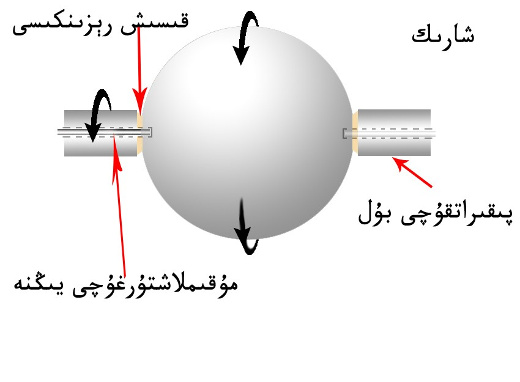
3-رەسىم
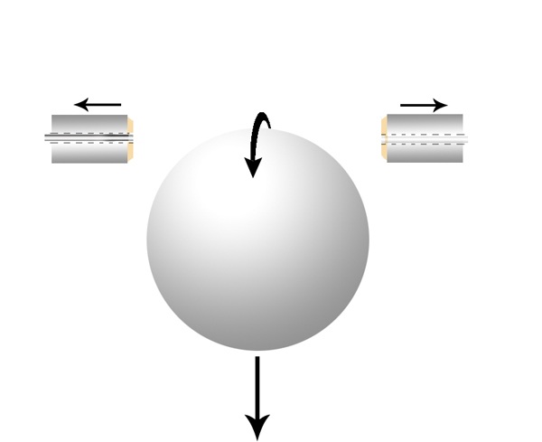
ئىككى دانە ئوتتۇرسىدا يىڭنە ئوق بولغان قىسقۇچى ئوق ئارقىلىق، شارىكنىڭ پىقىراش مۇقىملىقىنى ساقلاپ قالغان ئاساسىدىكى بۇل ئارقىلىق، شارىكنى پىقىرىتىش مەقسىدىگە يىتىپ، ئاندىن ئالدى بىلەن ئىككى تەرەپتە شارىكنىڭ تۈشۈكىگە كىرگۈزۈلگەن يىڭنە تارتىلىپ، بۇلغا چاپلانغان رېزىنكە بىلەن تەڭ ھالەتكە كەلگەندە بۇلمۇ بىرگە تارتىلىدىغان، شۇنىڭ بىلەن ھەر ئىككى تەرەپتىن تەڭ قۇيۇپ بىرىلىش ئۈنىمىگە يىتىش ئارقىلىق، شارىكنىڭ يەرنىڭ تارتىش كۈچى تەسىرىدە پىقىرىغان ھالەتتە، نورمال ئەركىن تاشلىنىش ئۈنىمىگە يىتىپ، سىناقنىڭ مۇۋاپىقىيەتلىك بولىشىغا كاپالەتلىك قىلىش ئىدى. بىز شۇ پىلان لاھىيە بويىچە تەييارلىق ئىشلىرىنى باشلاپ كەتتۇق.
ئىشلار تېخى يېرىم يولغا بارمايلا مىنىڭ ئائىلەمدە زورۇر ئىشىم چىقىپ قېلىپ، قايتىشقا مەجبۇر بولدۇم. شۇنداق قىلىپ جۇرئەت ۋاقتىنچە ئۆزى يالغۇز ئىشلەشكە مەجبۇر بولدى.
9- ئاينىڭ 10- كۈنى مىنىڭ يەنە ئۇرۇمچىگە كىلىدىغان پۇرسىتىم كىلىپ قالدى. دەل شۇ ۋاقىتتا جۇرئەتنىڭ تىرىشچانلىقى ۋە دوستلىرىنىڭ ياردىمى بىلەن، تەجىربە ئۈسكىنىسى پۈتۈپ تەجىربە سىنىقىنى ئېلىپ بارىدىغان كۇنىگە توغرىلىنىپتىكەن. مەن ئۈلگۈرۈپ كەپتىمەن. تەجىربە ئاپتونۇم رايونلۇق مىللى تىبابەت دوختۇرخانىسىنىڭ شەرقى تەرىپىگە جايلاشقان، يازغۇچىلار قوروسىدا ئېلىپ بېرىلىشقا تەييارلىنىپ بوپتىكەن. مەن كەلگەندىن كىيىن قالغان تەييارلىقلار پۈتۈپ سىناق باشلاندى. نەتىجىدە پولات شارىك مىنوتىغا 6000 ئەتراپىدا ئايلاندۇرۇلۇپ تاشلانغاندىن كىيىن، 1 مىتىر 27 سانتىمىتىر ئىگىزلىكتىن 18 سانتا ئايلىنش يونىلىشىگە ئوڭ تاناسىپ ھالدا ئېغىپ چۈشتى. بۇ نەتىجىدىن ھەممىمىز ھەيران قېلىشتۇق. چۈنكى ئاغدى دىگەندىمۇ بۇنچىلىك ئارلىقتىم شۇنچىۋالا ئېغىپ چۈشىشىنى مولچەرلىمىگەن ئىدۇق.
4-رەسىم
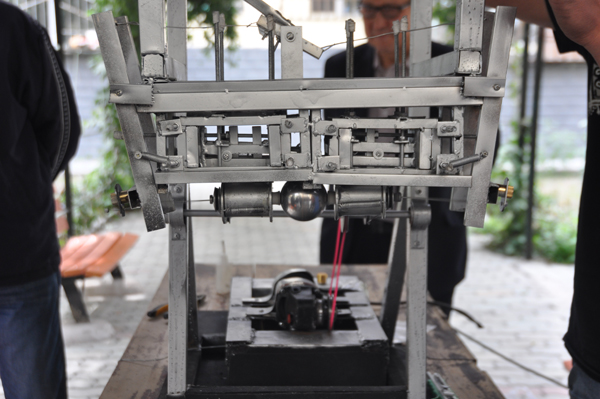
5-رەسىم
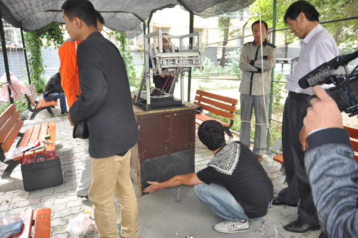
6-رەسىم
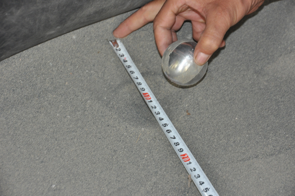
بىز قايتا-قايتا سىناق قىلىش جەريەنىدا پولات شارىكنىڭ تەخمىنەن 15 سانتا ئاغىدىغانلىقىنى ھېس قىلدۇق ۋە بۇ نەتىنجىدن شادلاندۇق.
بۇ قېتىملىق تەجىربە سىنىقىغا ئەلدوست شىركىتىنىڭ دىرىكتۇرى ياسىنجان كېرەم، شىنجاڭ ئۇنۋېرسىتىتى فىزىكا كەسپى ئۇقۇتقۇچىللىرىدىن مەمەت رىشات، خالمۇرات مۇئەللىملەر قاتنىشىپ، تەجىربىنىڭ نەتىنجىلىك بولغانلىقى يەكۈنلەندى. شۇنداقلا ئەمدى ۋاكىوم شارائىتىدا ئىشلەش پەيتىنىڭ يىتىپ كەلگەنلىكى، مۇشۇ تەجىربە ئاساسىدا ۋاكوم قۇرۇلمىسى ياساپ چىقىلسىمۇ نەتىنجىلىك بولدىغانلىقى قەيت قىلىندى.
ئەلدوست شىركىتىنىڭ دىرىكتۇرى ياسىنجان، بۇ تەجىربە قۇرۇلمىسىنى ياساشقا كېتىدىغان خىراجەتنى شىركەتتىن چىقىردىغانلىقىنى، بۇنىڭغا دەرھال تۇتۇش قىلسا بولدىغانلىقىنى ، شۇنداقلا جۈرئەت ۋە مىنى شىركەتكە تەكلىپ قىلىپ ئىشلىتىدىغانلىقىنى ، بىزنىڭ بۇ تەكلىپكە قۇشۇلىشىمىزنى قايتا-قايتا سەمىمىيلىك بىلەن تەلەپ قىلدى.
7-رەسىم
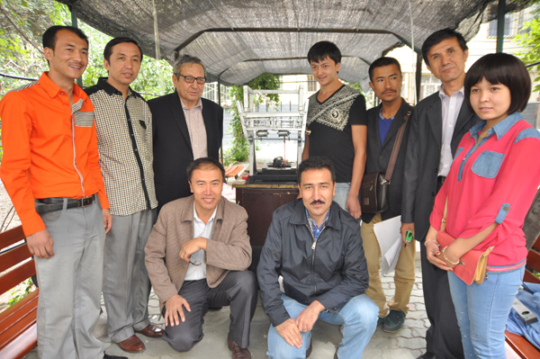
مەن يۇرتۇمدا تىجارىتىمنى تاشلاپ كېلەلمەيدىغانلىقىمنى ئويلىغان بولساممۇ لىكىن قاسىم سىدىق ئەپەندىم ئوتتۇرغا قويغان، شەكىل نەزىريىسىنىڭ بالدۇرراق ئىسپاتلىنىپ چىقىشى ئۇچۇن، ئۆز سەۋيەمنىڭ تۆۋەن بۇلۇشىغا قارىماي، قانچىلىق ياردىمىم تەگسە شۇنچىلىق ياردەمدە بۇلۇش ئستىگى بىلەن، يۈرتتىكى تىجارىتىمنى تاشلاپ شىركەت خادىمى بۇلۇپ ئىشلەشكە رازى بولدۇم. شۇنىڭ بىلەن دەرھال يۈرتقا قايتىپ تەييارلىق ئىشلىرىمنى پۈتتۈرۈپ، 10-ئاينىڭ 1-كۈنى شىركەتكە يىتىپ كىلىپ، 29- تېئورمىنىڭ ۋاكىومدا تەجىربە قىلىش ئۈسكىنىسىنى ياساشقا كىرىشىپ كەتتۇق.
جۈرئەت 9-ئاينىڭ 25 – كۈنىلا يىتىپ كىلىپ بولغانكەن. بۇ 5 كۈن جەريانىدا تەجىربە قۇرۇلمىسىنىڭ لايىھە خەرىتىسىنى ئاساسەن پۈتتۈرۈپ بولغانكەن. شېركەتتىن رەخمىتۇللا كېرەمنى بىز بىلەن بىرگە ئىشلەيدىغانغا ئورۇنلاشتۇرۇپ بەردى. رەخمىتۇللا ئۆزى ئاق كۆڭۈل، تىرىشچان،قولى ئەپلىك يىگىت بولۇپ، سۇۋاركىچىلىقتىن، مانتىيورلىقتىن، خەۋىرى بولغاندىن سىرت مىخاينىكا جەھەتلەردىنمۇ قولى ئەپلىك ئىكەن. شېركەت يەنە بىر دانە ماشىنا چىقىرىپ بەرگەن بولۇپ، ئۇنىڭ شوپۇرىمۇ يەنىلا رەخمىتۇللا ئىدى. بىز ئۈچەيلەن لايھەگە ئاساسەن ماتىريال سېتىۋېلىش ۋە سىتانوكچىلارغا زۆرۆر بولغان ئۇسكىنىلەرنى قىردۇرۇش ئىشلىرىنى بۇيرىتىۋەتتۇق.
بىزگە ئەمدى بىر سېخ بولمىسا بولمايتتى، سېخ ئۈچۈن ئەلدوس شېركىتى ئىجارىگە ئالغان، ئولتۇراق ئۆي قورو تېمىنىڭ ئۇستىنى يېپىپ ۋاقىتلىك ئىسكىلات قىلغان ئۈچ بولۇڭ شەكلىدىكى، تەخمىنەن 20 كۇۋادىرات مىتىر چوڭلىقىدىكى ئۆي ( بۇنى ئۆي دىگەندىن كەپە دىسەك سەل مۇۋاپىق كىلەمدىكىن دەپ قارىدىم)نى بېكىتتۇق.
بىز ئۈچۈن مۇشىنچىلىك ئۆينىڭ چىققىنىمۇ خوشاللىنارلىق ئىدى، بىزگە چىرايلىق ئۆينىڭمۇ زۆرۇريىتى يوق ئىدى. ئۇنىڭ ئۈستىگە شەھەر مەركىزىگە يېقىن بولۇپ بەكمۇ قولايلىق ئىدى.
8-رەسىم
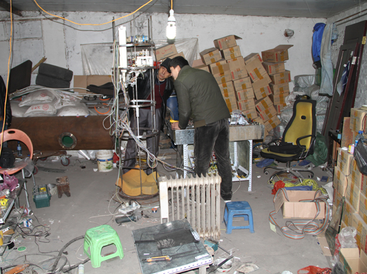
پىلان بويىچە بىز ۋاكىوم تەجىربە قۇرۇلمىسىنى، دىيامىتىرى 50 سانتىمىتىر كەڭلىكتىكى ئىككى مىتىر ئىگىزلىكتىكى ئەينەك تۇرۇببا ئىچىگە ئورۇنلشتۇرۇپ، ئەينەك تۇرۇببىنى ۋاكوم قىلىش ئارقىلىق مەقسەتكە يەتمەكچى ئىدۇق، شۇ سەۋەپلىك بىز پۇتۇن ئۇرۇمچى تەۋەسىدە، مۇشۇ ئۆلچەمدىكى ئەينەك تۇرۇبىنىڭ بار يېرىنى سۈرۈشتۈرۈپ تاپالمىدۇق. بارغانلا يېرىمىزدە شىنجاڭ تەۋەسىدە بۇنداق تۇرۇبىنى تاپقىلى بولمايدىغانلىقىنى، پەقەت ئىچكىرى ئۆلكىلەردىكى زاۋۇتلارغا بۇيرۇتىشىمىز كېرەكلىكىنى بىلدۈردى. بىز ئامال يوق ئىچكىرى ئۆلكىلەردىكى زاۋۇتقا بۇيرۇتماقچى بولدۇق ھەم بىر ۋاكالەتچى دۇكان بىلەن بۇيرۇتما توختامى تۈزۈپ قايتتۇق. بۇ جەرياندا بىز ئۈسكىنىگە كېرەكلىك زورۇرى بويۇملارنى سېتىۋېلىپ بىر چەتتىن ئىشقا كىرىشىپ تۇردۇق.
قۇرۇلمىغا بولغان ئۆلچەم، نازۇكلۇق دەرىجىسى ئىنتايىن يۇقۇرى بولۇپ، تەلەپكە يىتىش ئۇنچە ئاسان ئەمەس ئىدى. ئەمما بىز ئالدىنقى قېتىملىق ھاۋالىق شارائىتتا تەجىربە قىلغان تەجىربە ئۈسكىنىسىنى ئاساس قىلغان بولغاچقا، بۇ ئۈسكىنىنى ناھايىتى تېزلا ۋۇجۇتقا چىقىرالايمىز، دەپ بەكلا ئاددى ئويلاپ قالغان ئىكەنمىز. ئەمىلىيەت بىزنىڭ پەرىزىمىزدىكىدىن نەچچە ھەسسە مۇرەككەپ ۋە قىيىن توختاپ كەتتى.
قۇرۇلمىنىڭ ئەڭ نازۇك يېرى بولغىنى يۇقۇرىدىكى 2-رەسىمدا كورسىتىلگەندەك بولۇپ . ئۇنىڭ تاشلاش ھالىتىدە چوقۇم يەر يۈزىگە تىك ھالەتنى ساقلىشى، ھەم جەزمەن ئىككى تەرەپتىن تەڭ قۇيۇپ بىرىشنى ئىشقا ئاشۇرىشى شەرت بولۇپ، مۇشۇ جەريانلارنى ئورۇنداپ بولۇش جەريانىدىكى ئەنە شۇ ئىنتايىن قىسقا ۋاقىت ئىچىدە پىقىرىتىش سېستىمىسى پولات شارىكنى يەر يۈزىگە تىك بولمىغان ھالەتتە تاشلىۋاتمەسلىگى شەرت ئىدى. ئەگەر ئۈچىنىڭ بىرى كەم بولىدىكەن بۇ تەجىربە كۆزلىگەن مەقسەتكە يىتەلمەيتتى. ئۇسكىنىنىڭ مۇشۇنداق شەرتلىك ئولچەمدە ،بولۇپمۇ شارىكنىڭ ئەركىن چۈشىشىنى ئەمەلگە ئاشۇرماق تولىمۇ مۈشكۇل ئىش ئىكەنلىكىنى، بىز كىيىن ھېس قىلدۇق.
ئۈسكىنىنىڭ مۇشۇنداق نازۇكلۇك دەرىجىسى يوقۇرى بولغاچقا، لازىملىق ماتىرياللارنى بۇيرۇتۇپ ياسىتىدىغانلىرىغا قويۇلىدىغان تەلەپ تەبىئى ھالدا يۇقۇرى بولاتتى، تەلەپ يۇقۇرى بولغانچە بىز زاكاس قىلماقچى بولغان ئىشنى قىلىپ بىرىدىغانلار ئىش زاكاس قىلىشنى رەت قىلاتتى. ئامالسز چوقۇم ئىستانۇك بىلەن قىرىلىپ چىقىدىغانلىرىنى يوقۇرى باھا بىلەن زاكاس قىلغاندىن باشقا سۇۋاركىلاش، كىسىش ، ئىشلىرىنى ئۆزىمىز قىلىشقا توغرا كەلدى. بۇ جەھەتتىكى تېخنىكا، تەجىربىمىز يىتەرلىك بولمىسىمۇ ئولچەملىك چىقىرىشقا تىرىشتۇق. ئەمما يەنىلا تېخنىكا تەجىربىمىزنىڭ يىتەرلىك بولماسلىقى سەۋەپلىك تېخنىكىسى يۇقىرىراق سۇۋاركىچى ئۇستىلارنى ئىزدىدۇق. ئەپسۇس ھېچقايسى ئۇستاملار بىزنىڭ بۇنچە نازۇك قۇرۇلمىمىزنى سۇۋاركىلاپ بىرىشنى خالىمىدى. ئامال يوق بىز ئۇنى يەملەپ مۇقىملاشتۇرۇپ سۇۋاركىلاپ باقتۇق، شۇنداق قىلىپ بىر قىسىملىرىنى مۇۋاپىقىيەتلىك سۇۋاركىلىدۇق. ئەمما داتلاشماس پولاتنىڭ پوستى نىپىز بولغاچقا ئاز قىسمىنى سۇۋاركىلاش جەريانىدا تېشىپ قويدۇق. بىز يەنە قايتا ئۆلچەپ كىسىپ سۇۋاركا تەگمەيدىغان ئورۇندىن يەملەپ (سۇۋاركا قىلىندىغان ئورۇنغا يىلىم تىگىپ قېلىشقا بولمايدىكەن، ئۇنداق بولمايدىكەن سۇۋاركا قىلىنغاندا تېشىلىپ كىتىدىكەن) يەنىلا بىزگە سۇۋاركىلاپ بىرىشنى خالايدىغان سۇۋاركىچى ئۇستىلەرنى ئىزدىدۇق، ئاخىرى بىر پېشقەدەم ئۇستام بىزنىڭ يالۋۇرۇشلىرىمىزغا قاراپ كۆڭلى ئىرىپ قالدىمۇ، تەلىپىمىزگە تەستىراق قۇشۇلۇپ قالدى. سۇۋاركا مىللىمىتىر ئولچىمىگە تولۇق توشمىسىمۇ بىز ھەر ھالدا خوشال بولدۇق.
ۋاكىئوم ھالەتتە تاشلانغان شارىكنى، قول بىلەن تۇتۇپ تاشلاش قۇرۇلمىسىغا قىستۇرۇپ قۇيۇشقا بولمايدۇ-دە ئەلبەتتە. شۇڭا جۇرئەت بۇ جەھەتتە تولىمۇ ئەتراپلىق ئويلىغان بولۇپ، تاشلانغان شارىكنى ئېلىپ تاشلاش قۇرۇلمىسىغا ئاپتوماتىك قىسىپ قويىدىغان قولدىن بىرنى لايھەلىگەن بۇلۇپ، بۇ قولغا قويۇلىدىغان ئۆلچەم تەلەپمۇ يوقۇرى ئىدى. ئۇنىڭ كەسمە يۈزى چوقۇم 90 گىرادۇس ھەم تەكشى بولىشى تەلەپ قىلىناتتى . ئەگەر ئۇنداق بولمىغاندا ئاپتوماتىك قولنىڭ بىلىكى قىيپاش سوزۇلۇپ قالغاننىڭ ئۇستىگە قىسىلىۋېلىپ، ئۇزىراش-قىسقىراش بۇيرىقىنى ئىجرا قىلىشتا توسالغۇغا ئۇچراپ، سىناقنىڭ مۇۋاپىقىيەتلىك چقىشىغا تەسىر كۆرسىتەتتى. تەلەپكە لايىق كىسىپ بىرىدىغان ئۇرۇننى ئىزدەپ يۈرۈپ ئاخىرى يىپىلىق كىسىش ماشىنىسى بار ئورۇننى تېپىپ كەستۇردۇق. بۇنىڭ توختاتقۇچى چېكىلىكىنى يەنىلا ئوزىمىز سۇۋاركىلاشقا مەجبۇر بولدۇق. ھەم ئارتۇق كەلگەن جايلىرىنى ئىكەك بىلەن ئىكەپ يۈرۈپ كەلتۇردۇق. مۇشۇ ئىشلارنى پۇتكۈزىش ئۈچۈن ئاخشاملىرى سائەت 12 لەرگىچە ئىشلەپ يۈرۈپ بىر ئايدىن ئارتۇق ۋاقتىمىز سەرىپ بولدى. بۇ جەرياندا سىتانۇكقا بۇيرۇتقان نەرسىلىرىمىزمۇ پۈتۈپ قالغان بولۇپ قۇراشتۇرۇشقا كىرىشسەكلا بولاتتى.
بىز ئەسلى پىلان بويىچە ۋاكىوم قىلىدىغان ئەينەك تۇرۇببا توختام بويىچە ئۇزۇنلىقى ئىككى مىتىر دىيامىتىرى ئەللىك سانتا بولىشى كېرەك ئىدى. بىز شۇ بويىچە ئۈسكىنىلەرنىڭ ئۆلچىمىنى لايھەلەپ ۋە بىر بۆلىكىنى ياساپمۇ بولغان ئىدۇق. ئەسلىدىكى بېكىتكەن كۈنى بىز مالنىڭ كەلگەنلىك ئۇقتۇرشىنى تاپشۇرۇپ ئالالمىدۇق. بىز سەل گۇمانسىرش ئىچىدە نىمە ئىش بولغاندۇ؟ ئەجەپ خەۋەر قىلمايدىغۇ؟ دىيىشىپ بېرىپ سۈرۈشتۈرۇپ باقايلى دەپ زاكاس قىلغان ۋاكالەتچىنىڭ دۇكىنىغا قاراپ يولغا چىقتۇق. كۆڭلۈم بىرخىل ئەنسىرەش ئىچىدە كىتىپ باراتتىم. ‹‹ نىمىشكە خەۋەر قىلمايدىغاندۇ؟ تۇربا كەلگۈچە چېقىلىپ كەتمىگەندۇ؟›› دىگەن ئەنسىرەش چۇلغىۋالدى. ئەمما يەنە ئۆزەمگە ‹‹ ئۇنداق بولمىغۇر خىياللارنى قىلماي›› دەپ ئۆز- ئۆزەمگە ئەسكەرتەتتىم.
ئەمما ئۇلار كەلتۇرگەن ئەينەك تۇرۇببىنى كۆرۇپ ھەيرانلىقىمىزدىن تۇرۇپلا قالدۇق ، كۆز ئالدىمىزدا ئون سەككىز كۈن كۈتۈپ كۆرگىنىمىز ئىككى مىتىر ئۇزۇنلۇقتىكى دىيامىتىرى بەش سانتىمىتىر كىلىدىغان ئەينەك تۇرۇببا ئىدى. بۇ بىزگە شۇنداق ئىنچىكە ۋە ئۇزۇن كۆرۈنۈپ كەتتىكى- خۇددى ئەينەك ئىستاكاننى ئىككى مىتىر سوزۇۋەتكەندەكلا بىلىندى. بۇنىڭغا قاراپ يا كۈلىشنى يا ئاچچىقلىنىشنى بىلمەي دۇكاندارغا قارىغىنىمىزدا دۇكاندارنىڭ يۈزلىرى قىزىرىپ دۇدۇقلىغان ھالدا ‹‹سىلەر بۇيرۇتقىنى مۇشۇنداقمىدى؟›› دېۋىدى ئەرۋايىمىز ئۇچۇپلا كەتتى. بىز ئىككى ئاي ئىچىدە تېز سۈرئەتتە بۇ تەجىربە ئۇسكىنىسىنى ياساپ چىقىمىز يېڭى يىلغا ئۇلگۈرتىمىز دەپ، ئەتتىگەن تۇرۇپ ئىشلىگىلى تۇرساق كەچ سائەت 10 لارغىچە ئارام ئالمايتتۇق. مانا ئەمدى كۆز ئالدىمىزدىكى بۇ ئىشنى كۆرۈپ قانداقمۇ غەزەپلەنمەي تۇرالايمىز؟. بىز ‹‹ سىلەر نىمە قىلىپ قويدۇڭلار›› دەپ توختامنى كۆرسىتىپ تۇرۇپ ‹‹ سىلەر بىزنىڭ ۋاقتىمىزنى ئىسراپ قىلۋەتتىڭلار بۇنىڭ ئۈچۈن چوقۇم جاۋاپكار بولىشىڭلار كېرەك››، دىگىنىمىزدە دۇكاندار ‹‹كەچۈرۈڭلار زاۋۇت تېلفوندا دىگەن ئۇچۇرنى خاتا چۈشۈنىۋېلىپ ئاقىۋەتتە مۇشۇنداق ئىشنى قىلىپ قويۇپتۇ، خاتالىق زاۋۇت تەرەپتە بىز سىلەرنىڭ زاكالەت پۇلۇڭلارنى قايتۇرۇپ بىرەيلى›› دەپ ئۈزرە ئېيتتى. بىزنىڭ ئەينى ۋاقىتتىكى كەيپىياتىمىزدا بۇنى قانداقمۇ قوبۇل قىلالايمىز. بىز ‹‹زاكالەت پۇلۇڭنى قايتۇرۇپ بىرەيلى؟ بىزگە پۇل ئەمەس ئەينەك تۇربا كېرەك. ئىشنى ئاخساتقىنىڭلار ئۈچۈن تولەم بىرىڭلار بولمىسا سوتتا كۆرۇشەيلى>> دەپ چىقىپ كەتتۇق. كىيىن ۋاقىت ئىسراپچىلىقى ۋە نۇرغۇن ئاۋارچىلىقلارنى كۆزلەپ سوتقا ئەرز قىلىشتىن شېركەت ۋاز كەچتى ۋە زاكالەت پۇلنى قايتۇرۋالدۇق. دۇكاندارمۇ بۇ ئىشتىن تولىمۇ خۇرسەن بولغىنىنى بىلدۇرۇپ قايتا- قايتا ئەپۇ سورىدى.
شۇنىڭ بىلەن ئەينەك تۇرۇببا ئىشلىتىش پىلانىمىز سۇغا چىلاشتى. بىز ئەمدى بۇنىڭغا ئەسلى ئۆلچەمگە مۇۋاپىق كەلگۈدەك تومۇر تۇرۇببا ئىشلەتمەكچى بولۇپ، ماس كىلىدىغان تومۈر تۇرۇببىنى ئىزدەشكە كىرىشتۇق. جۇرئەت بىلەن رەخمۇتۇللا ئىككىسى 8-ئاۋغۇست پولات تۈمۈر زاۋۇتىغا بارغان ئىكەن، ئۇ يەردە بۇنداق پارچە تۈمۈر ساتمايدىغانلىقىنى بىلىپتۇ. ئۇلار ۋاكالەتچى شېركەتلەرنى ئىزدەپ بېقىشنى تەۋسىيە قىلغاندىن كىيىن بۇ تۇنۇشمىغان يەردە تىنەپ- تەمتىرەپ يۈرۈپ، بىر ئادەم شالاڭ جايدىكى تومۇر –تېسەكلەرنى دۆۋىلەپ قويغان جايغا كىلىپ قاپتۇ. ئۇلار سۈرۈشتۈرۈش ئۈچۈن ئادەم ئىزدەپ تۇرغان پەيتتە، يوغان بىر ئىت ئېتىلىپ كىلىپ ئۇلارنى شۇنداق سەت قورقىتىۋېتىپتۇ. ھېلىمۇ ئىتنىڭ ئىگىسى ئۆيدىن ئۈلگۈرۈپ چىقىپ ئىتنى چاقىرۋېپتۇ ۋە نىمىشقا كەلگىنىنى سورىغاندىن كىيىن ‹‹ سىلەرگە لازىملىق تومۈر تورۇبا بۇ يەردە بار بولسىمۇ ئەمما ئۇنى كىسىپ پارچىلاپ ساتمايمىز. سىلەر ئەڭ ياخشىسى كېرەكسىز تومۇر-تېسېكلەرنى يىغىۋېلىش ئورنىغا بېرىپ ئىزدەپ بېقىڭلار ›› دەپ يول كۆرسىتىپتۇ. شۇنداق ئورۇننىڭ قەيەردىلىكىنى سورىغاندىن كىيىن، شۇ تەرەپكە قاراپ يولغا چىقىپتۇ. مۇشۇ جەرياندا ئۇلار ئەتىگەن يىگەن تاماق بىلەن بولغاچقا، قورساقلىرى ئېچىپ تاراقشىپ كىتىپتۇ. مۇسۇلمانچە ئاشخانىلارنىڭ بۇ تەرەپتە يوقلىغىنى ئۇلار ئويلاپ كۆرمىگەن ئىكەن. شۇنداق قىلىپ ئۇلار زاۋال ۋاقتى بىلەن، ئۈرۈمچىنىڭ شىمالى تەرىپىگە جايلاشقان سۇجۇ يولى ئەتراپىدىن، تۈمۈر-تېسەكلەرنى يىغىۋىلىپ ساتىدىغان چوڭ بىر بازارنى تېپىپ، شۇ جايدا لازىملىق تۇربىنىڭ بارلقىنى كۈرۈپ، كۆڭلى جايىغا چۈشۈپ قايتىپ كەپتۇ. ئۇلار قايتىپ كەلگىنىدە ئاللىقاچان قاراڭغۇ چۈشۈپ بولغان بولۇپ، قوساقلىرى ئېچىپ ھالىدىن كەتكەندە، ئاران تاماق بار يەرگە كىلەلەپتۇ.
بىز ئەتىسى ئۇ تۈمۈر-تېسەك يىغىپ سېتىش ئورنىغا بېرىپ، بىزنىڭ تەلىپىمىزگە مۇۋاپىق كىلىدىغان تۈمۈر تورۇببىنى ئىزدەپ تېپىپ، كەستۈرۈپ ،مۇشۇنداق ئۈسكىنىلەرنى سۇۋاركىلايدىغان ئورۇننىڭ قەيەردىلىكىنى سورىغىنىمىزدا تومۇر تەسەك ساتىدىغان خوجايىن، ئۇ يەر يېقىندىلا مەن سىلەرنى باشلاپ ئاپىراي، دەپ بىزنى باشلاپ ئاپىرىپ قويدى. بىز ئىشلىرىمىزنىڭ ئەمدى سەل ئوڭۇشلۇق بولىۋاتقانلىقىدىن خوشاللىنىپ، ئۇ باشلاپ بارغان جايغا يىتىپ باردۇق. بىز بۇ يەرگە يىتىپ كەلگەندىن كىيىن قاراپ ھەقىقەتەن ھەيران قالدۇق. بىر كوچىنىڭ كۈن چىقىش پىشىنىڭ ئون مىتىر كەڭلىكتىكى يۈز مىتىر كەلگۈدەك جايدا، تومۇر تېسەك پىشىقلاپ ئىشلەيدىغان خەنزۇلار ئىگەللەپ تىجارەت قىلىدىكەن. بىرسى قىلغىنىنى يەنە بىرسى قىلمايدىكەن، خۇددى ئىش تەقسىماتىنى بولىشىۋالغادەك، بىز ئېلىپ بارغان تۇربىنىمۇ ئۇ يەردە پەقەت شۇ بىرسىلا سۇۋاركىلايدىكەن. ئۇنىڭ سۇۋاركىلاش تېخنىكىسىمۇ ھەقىقەتەن يوقۇرى ئىكەن.
شۇنداق قىلىپ بىز ئۇنىڭغا 1800يۇەنگە ئۈچ كۈندە پۇتتىرىدىغانغا پۇتۇن سۇۋېركا ئىشلىرىنى زاكاس قىلدۇق.
بىز ئەمدى تۇڭ( تومۇر تۇرۇبىنى بىز تۇڭ دەپلا ئاتىدۇق)نىڭ ئولچىمى بويىچە ياسىغان ئۈسكىنىلەرنى قۇراشتۇرۇشنى باشلىدۇق. تۇڭ ئىچىگە ھەرقايسى ئۈكۈنە سېستىمىلارنى ئورۇنلاشتۇرۇش ئۈچۈن پولات چىۋىقتىن ئىسكىلىت ياسىدۇق. ۋە ئىسكىلىتنى تەگلىككە ۋېنتا بىلەن چاتتۇق.
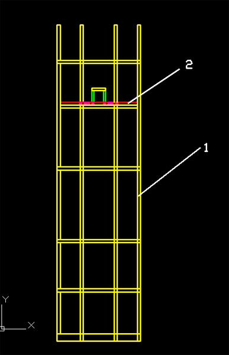
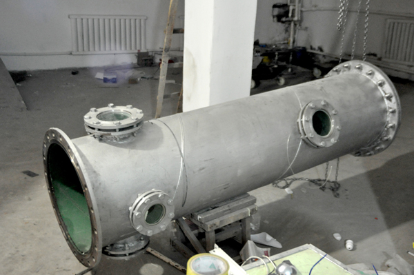
مىخاينىك قول شارىكنى ئاستىدىن قىسىپ ئېلىپ، ئۈستىدىكى پىقىرتىپ تاشلىغۇچقا دەل توغرا يەتكۈزۈپ بىرىپ، شارىكنىڭ تاشلىنىدىغان يولىدىن ئۆزىنى چەتكە ئېلىپ تۇرىشى ئۈچۈن، بىرقانچە خىل ھەركەت شەكلىنى ئورۇندىشى كېرەك بولاتتى.
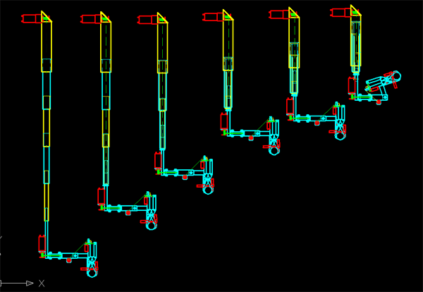
بۇنداق ھەركەت چوقۇم دەل توغرا بولىشى كېرەك بولۇپ، ھەربىر ئۈگىگە بىر ئىككىدىن سەزگۈر ئۈزچات ئورنىتىلىپ ھەركەت ھالىتىنى ئاپتوماتىك ئورۇندىتىلىشى كېرەك ئىدى. بىز مەملىكىتىمىزدە ئىشلەنگەن سەزگۈر ئۈزچاتنى ئەرزان دەپ سېتىۋالغان ئىدۇق، ئەمما گىرىنىڭ چىقىمى ئىككى دىگەندەك بۇ ئۈزچاتلار دەسلىۋىدە نورمال ئىشلەيتتى، ئەمما سىناق بىر- ئىككى قېتىم تەكرارلانغاندا، ئورۇندا ئۆزگىرىش بولۇپ ھەركەت نىشانلانغان دەل ئورۇنغا يىتىپ بارالمايتتى، ياكى ئاشۇرۋېتەتتى. بىر ئورۇندىكىسىنى ئالماشتۇرساق يەنە بىر ئورۇندىكىسىدىن چاتاق چىقاتتى. بۇ ئىش بىزنى شۇنداق بىزار قىلۋاتتىكىن .... خاپىلىقىمىزدىن پۈتۈن سەزگۈر ئۇزچاتلارنى سۆكىۋېلىپ ھەممىسىگە ياپوننىڭ ئۈزچاتلىرىنى ئالماشتۇردۇق، شۇندىلا مىخاينىك قولنىڭ ھەركىتى نورماللىشىپ بىرئاز ئارام تاپتۇق.
شارىك قىسقۇچنىڭ شارىكنى تېز سۈرئەتتە ئايلاندۇرغان پەيتتە، ئېغىرلىق مەركىزىنىڭ مەركەزدىن قېچىش (شارىكنىڭ ئېغىرلىق مەركىزىنى مۇتلەق توغرا تېپىش، بىز ئۈچۈن مۈمكىن ئەمەس) كۈچىنىڭ تەسىرىدە تەۋرىنىش سەۋەبىدىن، شارىكنىڭ تەۋرىنىشىنى كېمەيتىش ئۈچۈن، جۈرئەت ئارلىققا يۈزى سىلىقلانغان قەغەز يۆگەشنى، ئالدىنقى قېتىملىق ئۈسكىنىدە ئىشلەتكەن ئىكەن. ئۇنىڭ ئۈنىمى ياخشى بولغاچقا بۇ قېتىممۇ شۇنداق ئۇسۇلنى ئىشلەتتۇق.
9-رېسىم
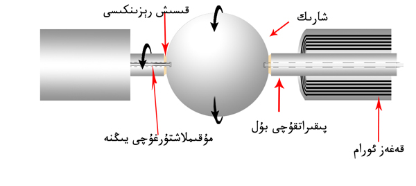
داۋامى ئىنكاس شەكلىدە يوللىنىدۇ. | 


 يوللىغان ۋاقتى 2014-6-15 02:25:30
يوللىغان ۋاقتى 2014-6-15 02:25:30